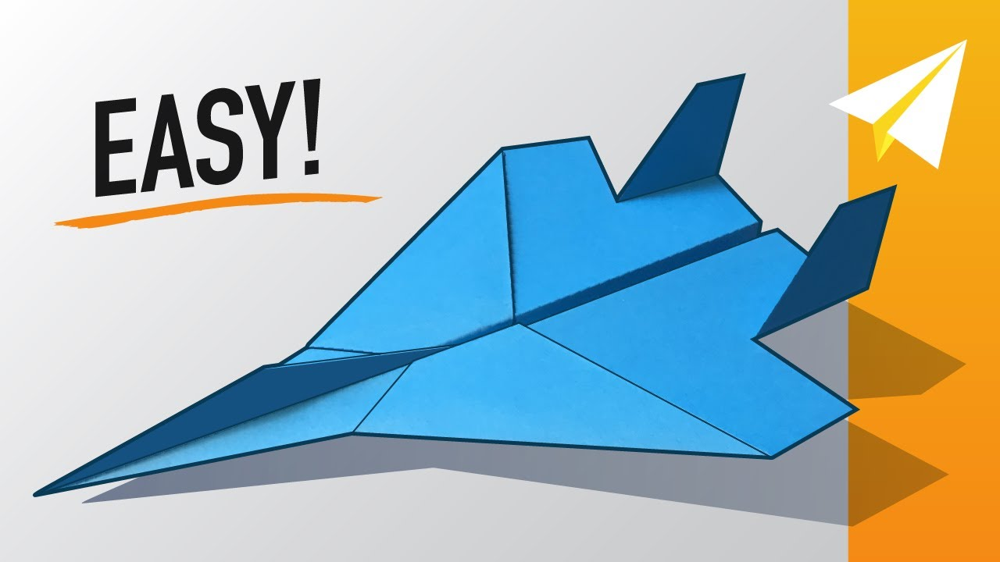

Paper Jet Tutorial
Interesting facts about Paper Airplanes.
Fun Fact! Did you know the longest air time achieved by a paper airplane was 29.2 seconds in 2010.
Another fact! The modern paper airplane was invented by a man named Jack Northop.
Did you know that The record distance for a paper plane to be thrown is currently held by Joe Ayoob using a plane designed by John Collins. The throw was made on 26 February 2012 at the McClellan Air Force Base near Sacramento in the United States and the distance – 226 feet and 10 inches (69.14 meters).
Paper Camel Tutorial

Interesting facts about Camels.
Fun Fact! There are two types of camels: One humped or “dromedary” camels and two humped Bactrian camels.
Another fact! Camels have three sets of eyelids and two rows of eyelashes to keep sand out of their eyes.
Did you know that Camels can completely shut their nostrils during sandstorms.
Paper Panda Tutorial

Interesting facts about Pandas.
Fun Fact! At 5 months old, giant pandas learn how to climb - sometimes practicing by climbing on their mum.
Another fact! Giant pandas spend 10-16 hours a day feeding, mainly on bamboo.
Did you know that sometimes to mark their scent, panda's climb a tree backwards with their hindfeet until they're in a full handstand upside down - enabling them to leave their scent higher up.